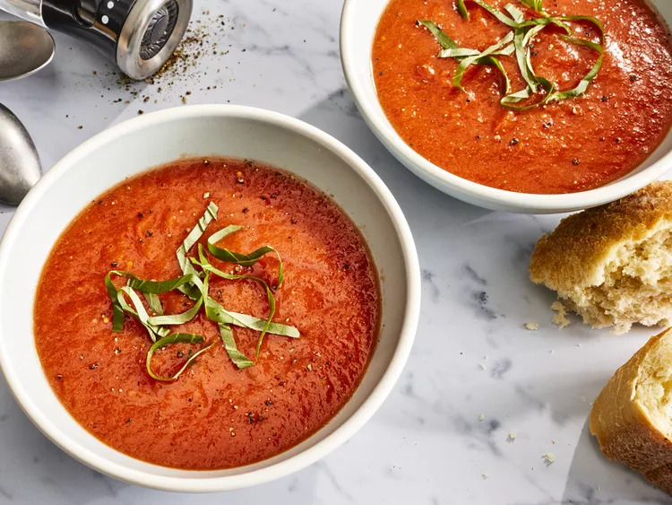

Fresh Tomato Soup

Description
This simple, quick and easy recipe for homemade fresh tomato soup is perfect to make when tomatoes are ripe in gardens and farmers' markets for a delicious summertime treat.
Ingredients
- 4 cups chopped fresh tomatoes
- 1 slice onion
- 4 cloves garlic
- 2 cups chicken broth
- 2 tablespoons butter
- 2 tablespoons all-purpose flour
- 1 teaspoon salt
- 2 teaspoons white sugar, or to taste